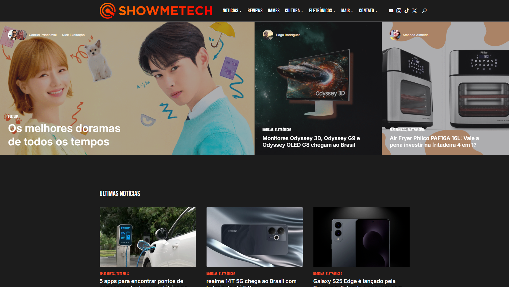
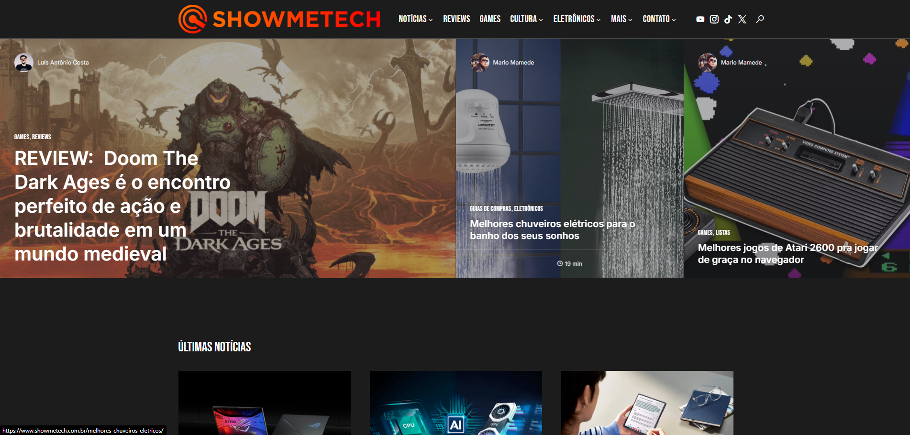

ShowMeTech
Desenvolvimento de portal de notícias de tecnologia com sistema de gerenciamento de conteúdo personalizado e otimização para SEO.
 Visitar o Site →Visão Geral do Projeto
O ShowMeTech é um dos principais portais de notícias de tecnologia do Brasil, com foco em análises de produtos, tutoriais e cobertura de lançamentos. O site enfrentava desafios significativos relacionados à performance, experiência do usuário e posicionamento nos mecanismos de busca. O objetivo do projeto era redesenhar completamente a plataforma, implementando um sistema de gerenciamento de conteúdo otimizado para as necessidades específicas de um portal de notícias de alto tráfego.
Desafios e Objetivos
O ShowMeTech recebia mais de 2 milhões de visitas mensais, mas enfrentava problemas como tempo de carregamento lento, dificuldades na monetização através de anúncios e uma experiência de usuário fragmentada em dispositivos móveis. Além disso, a equipe editorial precisava de ferramentas mais eficientes para gerenciar o grande volume de conteúdo produzido diariamente.
Os principais objetivos incluíam reduzir o tempo de carregamento das páginas para menos de 2 segundos, aumentar a taxa de retenção de usuários, melhorar o posicionamento orgânico para termos-chave de tecnologia e implementar uma estratégia de monetização mais eficiente que não comprometesse a experiência do usuário.
Pesquisa e Estratégia
Iniciamos o projeto com uma análise aprofundada dos dados de analytics, mapeando o comportamento dos usuários e identificando os principais pontos de atrito. Realizamos entrevistas com leitores frequentes e membros da equipe editorial para entender suas necessidades e frustrações com a plataforma existente.
A pesquisa revelou que os leitores valorizavam principalmente a rapidez no acesso às informações, a facilidade de navegação entre artigos relacionados e a qualidade das imagens e vídeos nas análises de produtos. Com base nesses insights, desenvolvemos uma estratégia centrada em três pilares: performance, descoberta de conteúdo e experiência visual imersiva.
Design e Arquitetura de Informação
O redesign visual priorizou uma interface limpa e moderna, com tipografia otimizada para leitura em telas e um sistema de grid flexível que se adapta perfeitamente a diferentes tamanhos de dispositivos. Implementamos um sistema de categorização visual por cores, facilitando a identificação rápida das diferentes seções do portal.
A arquitetura de informação foi completamente repensada, com uma nova taxonomia de categorias e tags que facilita a descoberta de conteúdo relacionado. Implementamos um sistema de recomendação contextual que sugere artigos com base no histórico de leitura e interesses demonstrados pelo usuário.
Desenvolvimento e Tecnologias
Desenvolvemos um tema WordPress personalizado, construído com foco em performance e escalabilidade. Utilizamos técnicas avançadas de otimização como carregamento lazy de imagens, minificação de código, cache avançado e entrega de conteúdo via CDN. Para o frontend, implementamos uma abordagem de "mobile-first" com CSS Grid e Flexbox, garantindo uma experiência consistente em todos os dispositivos.
Criamos plugins personalizados para atender às necessidades específicas da equipe editorial, incluindo um editor visual avançado para análises de produtos, um sistema de comparação side-by-side e ferramentas de SEO integradas ao fluxo de publicação. Também implementamos uma solução de anúncios programáticos otimizada para minimizar o impacto na performance e na experiência do usuário.
Otimização para SEO
Implementamos uma estratégia abrangente de SEO técnico, incluindo otimização da estrutura de URLs, implementação de dados estruturados (schema.org), melhorias na velocidade de carregamento e otimização para Core Web Vitals. Também desenvolvemos um sistema de interlinking automático e semi-automático para fortalecer a arquitetura interna do site.
Para conteúdo evergreen (como guias e tutoriais), implementamos um sistema de atualização programada com notificação para a equipe editorial, garantindo que o conteúdo permanecesse relevante e atualizado ao longo do tempo.
Resultados e Impacto
Após o lançamento do novo portal, o ShowMeTech registrou uma melhoria significativa em todos os indicadores-chave. O tempo médio de carregamento das páginas foi reduzido de 5,2 para 1,8 segundos, resultando em uma diminuição de 35% na taxa de rejeição. O tráfego orgânico aumentou 68% nos seis meses seguintes ao lançamento, com melhorias significativas no posicionamento para termos competitivos.
A receita com publicidade cresceu 47%, mesmo com uma redução no número total de anúncios exibidos, graças à implementação de uma estratégia de monetização mais eficiente e contextual. A equipe editorial relatou uma redução de 40% no tempo necessário para formatar e publicar artigos complexos, permitindo maior foco na produção de conteúdo de qualidade.